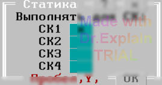

3.10 Снятие статики со входов коммутатора (STATICA)
Утилита используется для снятия статического напряжения со входов коммутатора. С помощью меню, показанного на рисунке ниже, задаются СК, все точки которых на 3 секунды подключаются к шине B1, замкнутой на корпус с помощью реле КЗШ. Измерения данная утилита не проводит.
